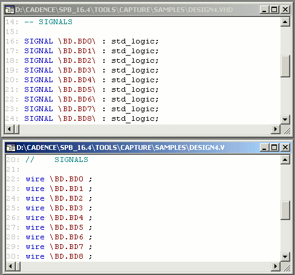

When you netlist a design, the signals in the design are
mapped on the output netlilst.
A NetGroup is a hetrogeneous group of nets and hence the
NetGroup as it is, cannot be translated as a NetGroup onto
a netlist. The Capture netlisting command netlists the
signals in a NetGroup by extracting out the signals when
creating the netlist.
However, when the signal names display on the netlist, the
names must also contain the name of the NetGroup. This
prevents the possibility of duplicate signal names on the
netlist. To define a NetGroup-signal name combination on
the netlist, Capture uses <NetGroup
Name><Separator><Signal Name>.
|
|
The default NetGroup-signal combination, <NetGroup Name>.<Signal Name>, uses the dot notation. |
For example, if you create a VHDL or Verilog netlist out of a design that contains NetGroups, the output uses the dot notation to handle the signals contained in the NetGroup. 
Other Netlists
While most of the netlists generated through the Capture netlist command support the dot notation to signify NetGroup signals, some netlisters (available in the Other Netlists tab of the Create Netlist dialog) do no support the dot in a net name. To handle this, Capture provides a TCL script (capCorrectNetnamesONL.tcl) that defines an alternative separator in the netlist depending on the netlister.
|
Formatter |
Name Separator |
|
orVstmodel.dll |
_ (underscore) |
|
orOhdlnet.dll |
_ (underscore) |
|
orPcadnlt.dll |
_ (underscore) |
|
orEdif.dll |
_ (underscore) |
|
orCbds.dll |
- (hyphen) |
|
orCalay90.dll |
- (hyphen) |
|
orCalay.dll |
- (hyphen) |
This TCL script runs during the netlisting procedure. This implies that if you have a custom netlister not included in Capture, and the formatter does not support the default dot separator you can update this script to specifiy an alternative separator.